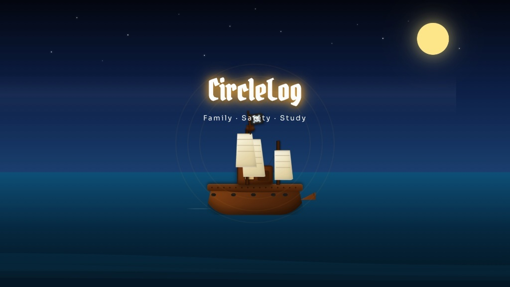

CircleLog

Technologies Used
Project Overview
CircleLog is an interactive maritime and vessel movement simulation application designed to visualize ship maneuvers, log tracking, and navigational trajectories in real time. The project combines algorithmic motion choreography with streamlined graphical controls to produce a captivating ocean navigation simulation.
Featuring fluid vector graphics and customized coordinate mathematics, CircleLog demonstrates how complex mathematical curves and orbital motion paths can be rendered efficiently within modern browser runtimes without performance degradation.
The application incorporates an intuitive diagnostic dashboard that displays dynamic positional logs, motion speeds, and navigational metrics, providing an engaging blend of technical precision and visual elegance.
Key Features
- Animated Ship Simulation: Real-time trajectory rendering and physics-based orbital motion with smooth vector animations.
- Live Telemetry Logging: Diagnostic metrics display reporting coordinate tracking, movement speed, and directional bearings.
- Interactive Controls: User-configurable parameters allowing speed modulation, path resets, and animation toggle states.
- Hardware Acceleration: Optimized frame rendering through lightweight CSS transforms and requestAnimationFrame loops.